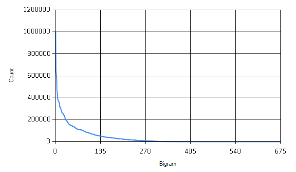
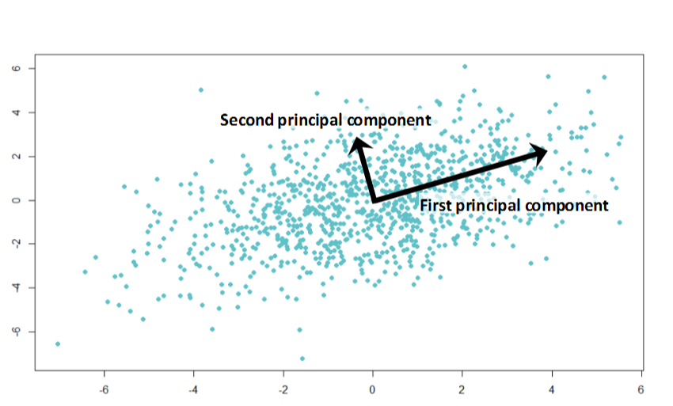
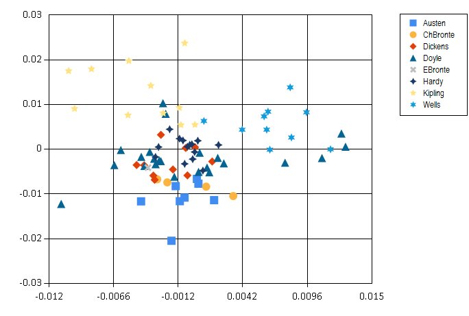

This blog post marks day 15 of the amazing F# Advent Calendar. Christmas is getting closer - soon we will have time to relax and perhaps read a nice book. Do you know who wrote the classic Christmas story, 'A Christmas Carol'? All sources claim it was Charles Dickens, but how can we be sure? I'll look at how this book compares to other books he wrote in terms of the language used in the books. I'll also analyse other classic works of literature from the Victorian and Edwardian era and look at similarity of their language. In the end, I'll try to find out if it really was Charles Dickens who wrote 'A Christmas Carol'.

This is a simple data analysis project which compares and visualises some publicly available classic English books. General approach to analysis of complex data that are hard to compare directly is to describe the data using a set of characteristic features. For my literature analysis, I'll be using frequencies of pairs of letters, called bigrams. These simple features capture some characteristics of the language that different authors use.
I compute such features for a set of classic books in English. Then I use Principal Component Analysis (PCA) to find how different is the language of different authors. I also use the PCA projection to visualise the data and visually explore their similarity.
Finally, I use the k nearest neighbours classification method to see if it really was Charles Dickens who wrote 'A Christmas Carol'. I will be using F# through this post, source code is available from my GitHub.
Parsing books from Project Gutenberg
For this project, I downloaded 82 books in total from 8 classic English authors:
- Jane Austen
- Charlotte Bronte
- Charles Dickens
- Arthur C. Doyle
- Emily Bronte
- Thomas Hardy
- Rudyard Kipling
- H. G. Wells
All the books I used are in the public domain, available from Project Gutenberg. The books I'm using in my little project are also available on my GitHub together with all the source code.
The first and most annoying step of any data analysis is to clean the data. Every book from project Gutenberg comes with licence agreement at the beginning and the full licence text at the end. The structure of these sections is fairly standardised, which makes it fairly easy to strip each book off these parts. The preamble in the beginning also contains book title which we can extract.
In F#, it's straightforward to load text of each book separated into lines and then look for the specific lines that mark the beginning and end of each book. The following functions identify the main body of text, standardise it to lower case and and also find the book title.
1: 2: 3: 4: 5: 6: 7: 8: 9: 10: 11: 12: 13: 14: 15: 16: 17: 18: 19: 20: 21: 22: 23: 24: 25: 26: 27: 28: 29: 30: 31: 32: 33: 34: 35: |
open System open System.IO type BookPart = | Start | End // This function uses specific format of books from Project Gutenberg let isBookPart part (line:string) = let keyword = match part with | Start -> "START" | End -> "END" (line.Contains (keyword + " OF THIS PROJECT GUTENBERG EBOOK")) || (line.Contains (keyword + " OF THE PROJECT GUTENBERG EBOOK")) let bookStarted line = isBookPart Start line let bookFinished line = isBookPart End line // Process lines of text in a book, skip license agreements // and standardise letters let cleanText (lines: string[]) = lines |> Seq.skipWhile (fun str -> not (bookStarted str)) |> Seq.takeWhile (fun str -> not (bookFinished str)) |> String.concat " " |> Seq.map (fun c -> if Char.IsLetter c then Char.ToLowerInvariant c else ' ') // Extract title of a book from the preamble let getBookTitle (lines: string[]) = lines.[0..15] |> Array.pick (fun str -> if str.StartsWith "Title:" then Some(str.[6..].Trim() ) else None) |
Now we have all the ingredients to pre-process each book:
1: 2: 3: 4: 5: |
let loadBook filename = let fullContents = File.ReadAllLines filename let title = getBookTitle fullContents let text = cleanText fullContents title, text |
Representing text with bigrams
Bigrams are simply pairs of letters. They are used in various language modelling algorithms. For example, different languages use bigrams with frequencies that are characteristic for each language. This property makes it possible to use bigrams for simple language idenfication.
Generally, other symbols than letters can be included into bigrams as well. Pairs of letters and spaces show what are common characters at the beginning and the end of words. Here I define all possible bigrams that I'm interested in: this piece of code generates simply all possible pairs of letters.
1: 2: 3: 4: |
let alphabet = "abcdefghijklmnopqrstuvwxyz" let letterPairs = [| for a in alphabet do for b in alphabet -> [|a; b|] |] |
Finally, we can write a function that turns a book into a sequence
of bigram counts. When we have sequence of letters in a book, it is
very easy to split it into all consequtive pairs of letters using
Seq.windowed (or Seq.pairwise) and then count occurences of each pair with
Seq.countBy. If we wanted to count number of trigrams (triples
of letters), we would only need to change the window size in Seq.windowed.
1: 2: 3: 4: |
let rawBigrams = text |> Seq.windowed 2 |> Seq.countBy id |
The following is the complete function which processes a whole book and returns bigram
counts in a standard order defined by letterPairs.
1: 2: 3: 4: 5: 6: 7: 8: 9: 10: 11: 12: 13: 14: 15: 16: 17: |
// Extract title and bigram counts from a specific book let bookBigrams filename = let title, text = loadBook filename let rawBigrams = text |> Seq.windowed 2 |> Seq.countBy id |> dict let bigramCountVector = letterPairs |> Array.map (fun pair -> if rawBigrams.ContainsKey pair then rawBigrams.[pair] else 0) title, bigramCountVector |
Now we can find which bigrams are the most frequent in each book.
1: 2: 3: 4: 5: 6: 7: |
let filename = "C:/Temp/books/Dickens/pg46.txt" let title, data = bookBigrams filename // most common bigrams Array.zip letterPairs data |> Array.sortBy (fun x -> - snd x) |> Seq.take 3 |
In 'A Christmas Carol', the most common bigram is 'th' followed by 'he'. It seems that the most frequent word in the book is 'the'!
1: 2: |
val it : seq<char [] * int> = seq [([|'t'; 'h'|], 3650); ([|'h'; 'e'|], 3532); ([|'i'; 'n'|], 2155)] |
The following block of code processes all books in my little data set.
Each book is located in a directory named after its author. To speed it up,
I run this step in parallel using F# PSeq.
Computing bigrams from all the books is still the most time-consuming step
of the analysis. For this reason, I save the results into a csv file
so that I don't have to re-run the computation often. You can find the
resulting csv file in the source-code.
1: 2: 3: 4: 5: 6: 7: 8: 9: 10: 11: 12: 13: 14: 15: |
#r "packages/FSharp.Collections.ParallelSeq/lib/net40/FSharp.Collections.ParallelSeq.dll" open FSharp.Collections.ParallelSeq let booksDir = "C:/Temp/books" let authorDirs = Directory.GetDirectories(booksDir) // Compute bigram counts for all books let authorBigrams = authorDirs |> Array.map (fun d -> Directory.GetFiles(d) |> PSeq.map (fun file -> bookBigrams file) |> PSeq.toArray) (Save computed results into a csv file.) |
Data preprocessing
Although now we have counts of bigrams in all the books, we are still not finished with the clean-up! There are many bigrams that are only rarely appearing in standard English text, such as 'qb' or 'bg'. These rare bigrams behave like noise in our data - they might come for example from some unusual name used just by one author etc.

The graph shows how many times each bigram appears in the books. We can safely discard many of the bigrams that are only rarely used.
1: 2: 3: 4: 5: 6: 7: 8: 9: 10: 11: 12: 13: 14: 15: 16: 17: 18: 19: 20: |
// read csv file and extract data (Read csv file and extract data.) // Sort bigrams by frequency let sortedBigrams = [| for idx in 0..letterPairs.Length - 1 -> let sum = fullData |> Array.sumBy (fun xs -> xs.[idx]) idx, sum |] |> Array.sortBy (fun (idx, sum) -> -sum) |> Array.map fst // How many bigrams to keep let bigramCount = 400 let mostUsedBigrams = sortedBigrams.[0..bigramCount-1] |> set let chooseBigrams bigramValues = bigramValues |> Array.mapi (fun i x -> if mostUsedBigrams.Contains i then Some(x) else None) |> Array.choose id |
Here I'm keeping only the 400 most frequent bigrams. The last step in preprocessing the data is to normalize the total counts for each bigram to relative frequencies within each document.
1: 2: 3: 4: |
// Normalize counts to relative frequencies let normalize (xs: float[]) = let total = Array.sum xs xs |> Array.map (fun x -> x/total) |
Finally, the data are prepared for the mathematical analysis. The following piece of code turns the data into a matrix.
1: 2: 3: 4: 5: 6: 7: 8: 9: |
open MathNet.Numerics open MathNet.Numerics.LinearAlgebra open MathNet.Numerics.LinearAlgebra.Double let dataMatrix = fullData |> Array.map (fun xs -> chooseBigrams xs) |> Array.map (fun xs -> normalize xs) |> DenseMatrix.ofColumnArrays |
Principal Component Analysis
Principal Component Analysis (PCA) is a mathematical method for data transformation. It is most commonly used for dimensionality reduction. Right now we have 400-dimensional dataset, i.e. separate dimension for each bigram. It is hard to visualise such data to get an overview of relations between individual books and authors. PCA gives us a method to project data onto a lower-dimensional hyperspace while preserving most differences. In the projection, data points that are far in the original data should stay distant from each other and vice versa.
PCA can be mathematically derived as a projection into a lower-dimensional hyperspace which minimizes the sum of squared differences between the original data point and its low-dimensional projection. What it does in simple terms is that it finds directions of largest variance in the data.

In the illustration above, the first principal component shows the direction of the largest variance in the data. The second principal component points to a direction of smaller variance. We can use principal component directions as a new coordinate system. For dimensionality reduction, we typically discard directions (dimensions) that account only for small variance in the data - these dimensions are not very informative (because they don't vary between data points), or account for noise in the data.
Before the actual Principal Component Analysis, we have to center data such that their mean is at zero.
1: 2: 3: 4: 5: 6: 7: 8: 9: 10: |
// Mean vector of the whole dataset let center = let n = dataMatrix.ColumnCount |> float dataMatrix.RowSums() / n // Normalize data to zero mean let centeredMatrix = let sumMatrix = Array.init dataMatrix.ColumnCount (fun _ -> center) |> DenseMatrix.OfColumnVectors dataMatrix - sumMatrix |
The standard algorithm for computing principal component
analysis is very simple, principal components are eigenvectors
of data covariance matrix. There is a function for eigenvalue decomposition
in Math.NET Numerics, which makes it straightforward to compute
in F#. First we need to calculate the covariance matrix
of our centered data.
\[S = \frac{1}{N-1} X X^T\]
\(X\) is the data matrix and \(S\) is the resulting covariance. I will work with a scaled covariance matrix \(X X^T\) which has the same eigenvectors as the matrix \(S\).
1: 2: 3: 4: 5: |
// Compute covariance matrix let covarianceMatrix = centeredMatrix * centeredMatrix.Transpose() // Eigenvalue decomposition let evd = covarianceMatrix.Evd() |
In variable evd we now have an object returned by Math.NET
which contains eigenvectors and eigenvalues of the covariance matrix.
Directions of the largest variance are eigenvectors that correspond
to largest eigenvalues. Since eigenvalues are ordered from smallest to
the largest, we have to pick eigenvectors from the end of their
matrix. The following function returns a matrix formed of
\(d\) most important eigenvectors.
1: 2: 3: |
let eigenvectors d = let m = evd.EigenVectors m.[0..m.RowCount-1, m.ColumnCount-d..m.ColumnCount-1] |
With eigenvectors ready, we can compute projection of our data set onto a specified number of dimensions \(d\).
\[\tilde{X} = E_d^T \, X\]
\(\tilde{X}\) is an approximation of our original data matrix \(X\) in \(d\) dimensions and \(E_d\) is the eigenvector matrix formed of \(d\) most important eigenvectors. The following function takes number of dimensions as an input and returns projection of the data into the specified number of dimensions.
1:
|
let projection d = (eigenvectors d).Transpose() * centeredMatrix |
Similarity of classic works of literature
Finally we can look at the classic books and how do they compare in terms of language that they use. The plot below shows a projection onto two most significant principal components.
.png){kind=link}
The resulting image is quite interesting: H. G. Wells and Rudyard Kipling are well separated from the others. This might be the result of using foreign and exotic names in their books. On the other hand, Arthur Conan Doyle seems to be all over the place - perhaps Sherlock Holmes investigated cases in many different environments. Another interesting thing is that women authors, Jane Austen and the Bronte sisters are all grouped together in the bottom half of the plot.
Note that this visualisation is very simplifying - it summarizes 400-dimensional vectors into just two dimensions. Still, it seems to reveal some interesting regularities in our data.
So who wrote 'A Christmas Carol'?
Let's turn to the key question of this blog post - was it indeed Charles
Dickens who wrote the book A Christmas Carol? For this, I will
use a simple classification algorithm, k nearest neighbours. The algorithm
itself is very simple: it computes distances of our data point of interest
(the book) to all other data points (other books). Then it selects \(k\)
nearest items. The author of the Christmas Carol book will be the author who wrote most
of the books that are closests.
This classification algorithm works very well when combined with PCA. In its standard form, k nearest neighbours suffers from the so-called curse of dimensionality. When computing distances in very high-dimensional spaces, the result is highly sensitive to noise and irrelevant dimensions. By preprocessing data with PCA and projecting it into a lower-dimensional space, k nearest neighbours turns into a much more robust algorithm.
For our analysis of 'A Christmas Carol', I projected the books' bigram frequencies into 20 dimensions. This captures more information about the data than the 2D visualisation.
1: 2: |
let projectedData = projection 20 let christmasCarol = projectedData.Column(christmasCarolIdx) |
To "identify" the author, I will look at only three nearest neighbours based on Euclidean distance:
1: 2: 3: 4: 5: 6: 7: 8: 9: 10: |
let kNearest k = [| for idx, v in projectedData.EnumerateColumnsIndexed() do if idx <> christmasCarolIdx then let distance = (v - christmasCarol)*(v - christmasCarol) yield titles.[idx], distance |] |> Seq.sortBy snd |> Seq.take k |> Array.ofSeq kNearest 3 |
What is the conclusion?
1: 2: 3: 4: |
val it : (string * float) [] = [|("Oliver Twist", 0.0001679233456); ("A Tale of Two Cities", 0.0001827125101); ("The Sign of the Four", 0.0002067513054)|] |
Well, it seems it must have been Charles Dickens after all! Two out of three closest books were written by him. This shows that our simple PCA analysis on bigrams was able to capture some characteristics of language used by different authors.
Summary
In this Christmas themed blog post, I went through the task of identifying author of a book based on features of language he used in his work. Although this is a simple toy problem, the general principles apply to other problems as well. Principal component analysis is an incredibly useful tool for visualisation of complex high-dimensional data. Together with k nearest neighbours algorithm it can be used for easy exploration for supervised learning problems. And it might even help you in fairy tales!

Happy holidays!
| Start
| End
Full name: christmascarolandothereigenvectors.BookPart
Full name: christmascarolandothereigenvectors.isBookPart
val string : value:'T -> string
Full name: Microsoft.FSharp.Core.Operators.string
--------------------
type string = String
Full name: Microsoft.FSharp.Core.string
Full name: christmascarolandothereigenvectors.bookStarted
Full name: christmascarolandothereigenvectors.bookFinished
Full name: christmascarolandothereigenvectors.cleanText
from Microsoft.FSharp.Collections
Full name: Microsoft.FSharp.Collections.Seq.skipWhile
Full name: Microsoft.FSharp.Core.Operators.not
Full name: Microsoft.FSharp.Collections.Seq.takeWhile
type String =
new : value:char -> string + 7 overloads
member Chars : int -> char
member Clone : unit -> obj
member CompareTo : value:obj -> int + 1 overload
member Contains : value:string -> bool
member CopyTo : sourceIndex:int * destination:char[] * destinationIndex:int * count:int -> unit
member EndsWith : value:string -> bool + 2 overloads
member Equals : obj:obj -> bool + 2 overloads
member GetEnumerator : unit -> CharEnumerator
member GetHashCode : unit -> int
...
Full name: System.String
--------------------
String(value: nativeptr<char>) : unit
String(value: nativeptr<sbyte>) : unit
String(value: char []) : unit
String(c: char, count: int) : unit
String(value: nativeptr<char>, startIndex: int, length: int) : unit
String(value: nativeptr<sbyte>, startIndex: int, length: int) : unit
String(value: char [], startIndex: int, length: int) : unit
String(value: nativeptr<sbyte>, startIndex: int, length: int, enc: Text.Encoding) : unit
Full name: Microsoft.FSharp.Core.String.concat
Full name: Microsoft.FSharp.Collections.Seq.map
struct
member CompareTo : value:obj -> int + 1 overload
member Equals : obj:obj -> bool + 1 overload
member GetHashCode : unit -> int
member GetTypeCode : unit -> TypeCode
member ToString : unit -> string + 1 overload
static val MaxValue : char
static val MinValue : char
static member ConvertFromUtf32 : utf32:int -> string
static member ConvertToUtf32 : highSurrogate:char * lowSurrogate:char -> int + 1 overload
static member GetNumericValue : c:char -> float + 1 overload
...
end
Full name: System.Char
Char.IsLetter(s: string, index: int) : bool
Full name: christmascarolandothereigenvectors.getBookTitle
member Clone : unit -> obj
member CopyTo : array:Array * index:int -> unit + 1 overload
member GetEnumerator : unit -> IEnumerator
member GetLength : dimension:int -> int
member GetLongLength : dimension:int -> int64
member GetLowerBound : dimension:int -> int
member GetUpperBound : dimension:int -> int
member GetValue : params indices:int[] -> obj + 7 overloads
member Initialize : unit -> unit
member IsFixedSize : bool
...
Full name: System.Array
Full name: Microsoft.FSharp.Collections.Array.pick
String.StartsWith(value: string, comparisonType: StringComparison) : bool
String.StartsWith(value: string, ignoreCase: bool, culture: Globalization.CultureInfo) : bool
Full name: christmascarolandothereigenvectors.loadBook
static member AppendAllLines : path:string * contents:IEnumerable<string> -> unit + 1 overload
static member AppendAllText : path:string * contents:string -> unit + 1 overload
static member AppendText : path:string -> StreamWriter
static member Copy : sourceFileName:string * destFileName:string -> unit + 1 overload
static member Create : path:string -> FileStream + 3 overloads
static member CreateText : path:string -> StreamWriter
static member Decrypt : path:string -> unit
static member Delete : path:string -> unit
static member Encrypt : path:string -> unit
static member Exists : path:string -> bool
...
Full name: System.IO.File
File.ReadAllLines(path: string, encoding: Text.Encoding) : string []
Full name: christmascarolandothereigenvectors.alphabet
Full name: christmascarolandothereigenvectors.letterPairs
Full name: christmascarolandothereigenvectors.rawBigrams
Full name: Microsoft.FSharp.Collections.Seq.windowed
Full name: Microsoft.FSharp.Collections.Seq.countBy
Full name: Microsoft.FSharp.Core.Operators.id
Full name: christmascarolandothereigenvectors.bookBigrams
Full name: Microsoft.FSharp.Core.ExtraTopLevelOperators.dict
Full name: Microsoft.FSharp.Collections.Array.map
Full name: christmascarolandothereigenvectors.filename
Full name: christmascarolandothereigenvectors.title
Full name: christmascarolandothereigenvectors.data
Full name: Microsoft.FSharp.Collections.Array.zip
Full name: Microsoft.FSharp.Collections.Array.sortBy
Full name: Microsoft.FSharp.Core.Operators.snd
Full name: Microsoft.FSharp.Collections.Seq.take
val seq : sequence:seq<'T> -> seq<'T>
Full name: Microsoft.FSharp.Core.Operators.seq
--------------------
type seq<'T> = Collections.Generic.IEnumerable<'T>
Full name: Microsoft.FSharp.Collections.seq<_>
val char : value:'T -> char (requires member op_Explicit)
Full name: Microsoft.FSharp.Core.Operators.char
--------------------
type char = Char
Full name: Microsoft.FSharp.Core.char
val int : value:'T -> int (requires member op_Explicit)
Full name: Microsoft.FSharp.Core.Operators.int
--------------------
type int = int32
Full name: Microsoft.FSharp.Core.int
--------------------
type int<'Measure> = int
Full name: Microsoft.FSharp.Core.int<_>
namespace System.Collections
--------------------
namespace Microsoft.FSharp.Collections
static member CreateDirectory : path:string -> DirectoryInfo + 1 overload
static member Delete : path:string -> unit + 1 overload
static member EnumerateDirectories : path:string -> IEnumerable<string> + 2 overloads
static member EnumerateFileSystemEntries : path:string -> IEnumerable<string> + 2 overloads
static member EnumerateFiles : path:string -> IEnumerable<string> + 2 overloads
static member Exists : path:string -> bool
static member GetAccessControl : path:string -> DirectorySecurity + 1 overload
static member GetCreationTime : path:string -> DateTime
static member GetCreationTimeUtc : path:string -> DateTime
static member GetCurrentDirectory : unit -> string
...
Full name: System.IO.Directory
Directory.GetDirectories(path: string, searchPattern: string) : string []
Directory.GetDirectories(path: string, searchPattern: string, searchOption: SearchOption) : string []
Directory.GetFiles(path: string, searchPattern: string) : string []
Directory.GetFiles(path: string, searchPattern: string, searchOption: SearchOption) : string []
"Author,Book,"
+ (letterPairs
|> Array.map (fun cs ->
cs |> Array.map string |> String.concat "")
|> String.concat ",")
let lines =
Array.zip authorDirs authorBigrams
|> Array.map (fun (d, data) ->
let author = Path.GetFileName(d)
data
|> Array.map (fun (b, xs) ->
author + "," + b
+ "," + (xs |> Array.map string |> String.concat ","))
)
|> Array.concat
let file = "C:/Temp/books/bigramValues.csv"
File.WriteAllLines(file, Array.append [|header|] lines)
#r "packages/MathNet.Numerics.FSharp/lib/net40/MathNet.Numerics.FSharp.dll"
#load "packages/FSharp.Charting.0.90.9/FSharp.Charting.fsx"
open System
open System.IO
open FSharp.Charting
// Load the full dataset
let dataFile = "C:/Temp/books/bigramValues.csv"
let authors, titles, fullData =
(dataFile |> File.ReadAllLines).[1..]
|> Array.map (fun line ->
let fullLine = line.Split [|','|]
fullLine.[0], fullLine.[1],
fullLine.[2..] |> Array.map (fun x -> Double.Parse x))
|> Array.unzip3
Full name: Microsoft.FSharp.Collections.Array.sumBy
Full name: Microsoft.FSharp.Core.Operators.fst
Full name: Microsoft.FSharp.Core.ExtraTopLevelOperators.set
Full name: Microsoft.FSharp.Collections.Array.mapi
Full name: Microsoft.FSharp.Collections.Array.choose
val float : value:'T -> float (requires member op_Explicit)
Full name: Microsoft.FSharp.Core.Operators.float
--------------------
type float = Double
Full name: Microsoft.FSharp.Core.float
--------------------
type float<'Measure> = float
Full name: Microsoft.FSharp.Core.float<_>
Full name: Microsoft.FSharp.Collections.Array.sum
struct
member CompareTo : value:obj -> int + 1 overload
member Equals : obj:obj -> bool + 1 overload
member GetHashCode : unit -> int
member GetTypeCode : unit -> TypeCode
member ToString : unit -> string + 3 overloads
static val MinValue : float
static val MaxValue : float
static val Epsilon : float
static val NegativeInfinity : float
static val PositiveInfinity : float
...
end
Full name: System.Double
Full name: Microsoft.FSharp.Collections.Array.init
Full name: Microsoft.FSharp.Collections.Seq.sortBy
Full name: Microsoft.FSharp.Collections.Array.ofSeq